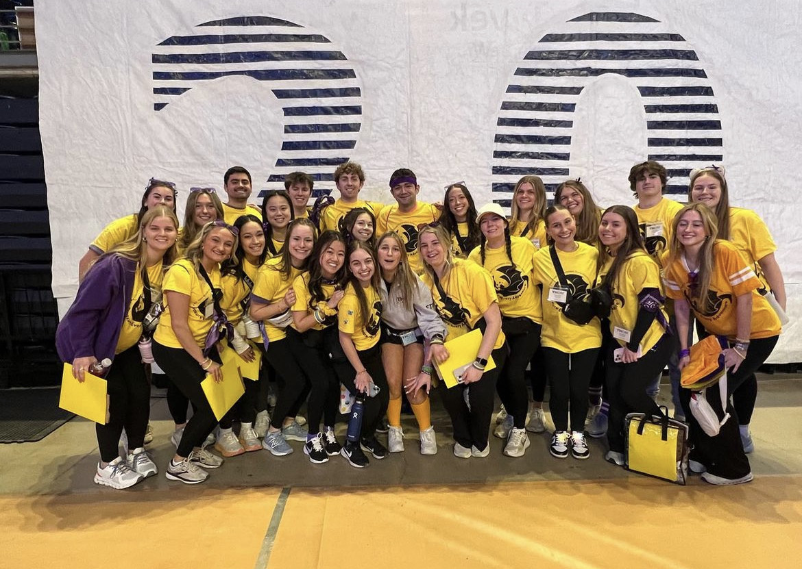

Club Cross Country
Club Cross Country is the club that I am the most involved with. It is a running club for runners of all speeds and skill levels.
Penn State Club Cross Country was founded to give Penn State students of all abilities the chance to train and compete in distance running at the collegiate
level without the stresses of a varsity sport, regardless of age, ancestry, color, disability or handicap, national origin, race, religious creed,
sex, sexual orientation, gender identity, gender expression, veteran status, or any intersectional combination of these categories.
Club Cross Country functions under the core values of inclusivity, enthusiasm, resiliency, drive, hard work, positivity, and fun.
THON
THON™ is a student-run philanthropy committed to enhancing the lives of children and families impacted by childhood cancer. Our mission is to provide emotional and financial support, spread awareness, and ensure funding for critical research—all in pursuit of a cure.
